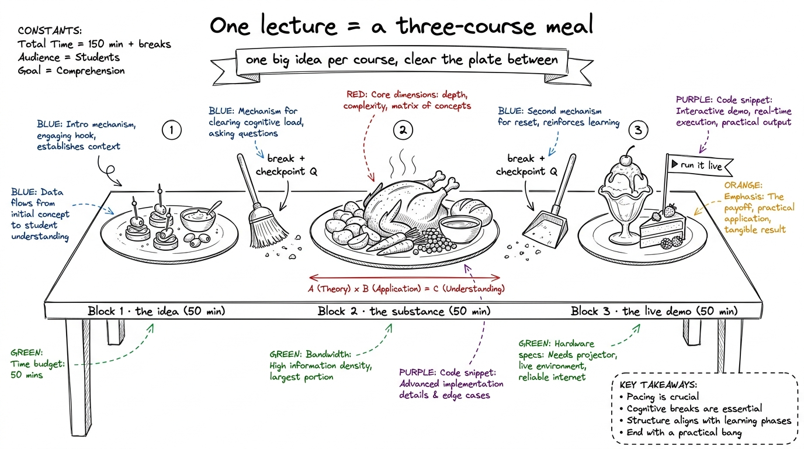
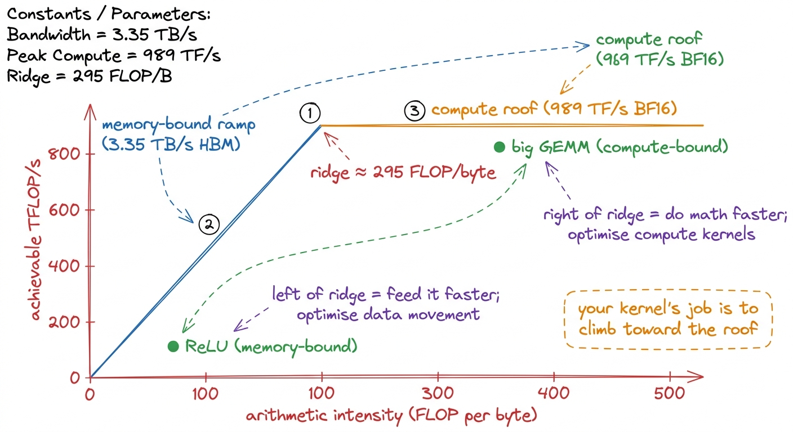
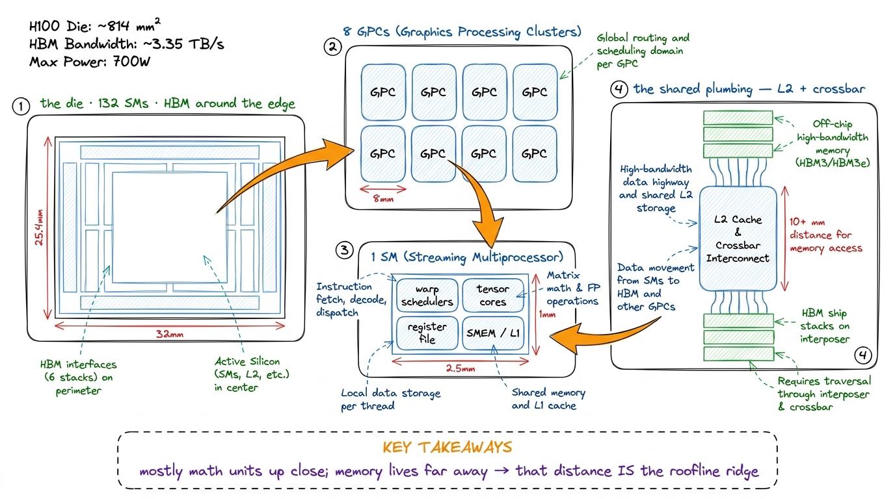
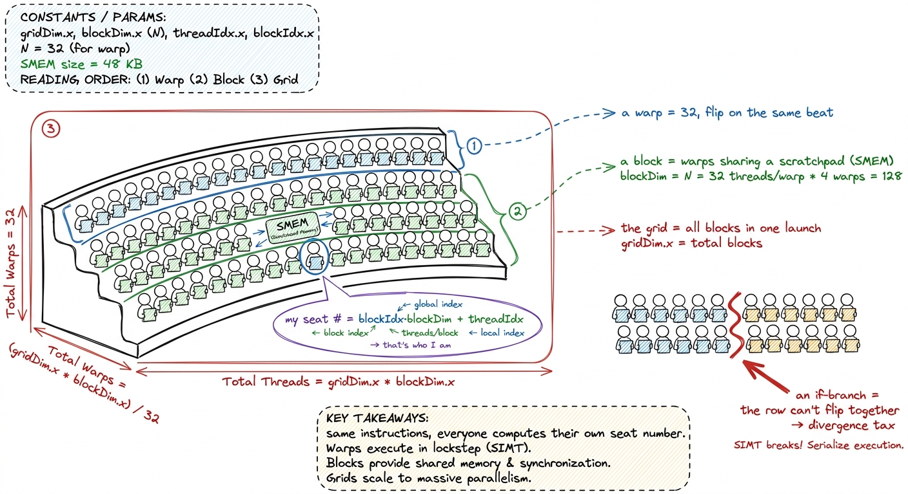
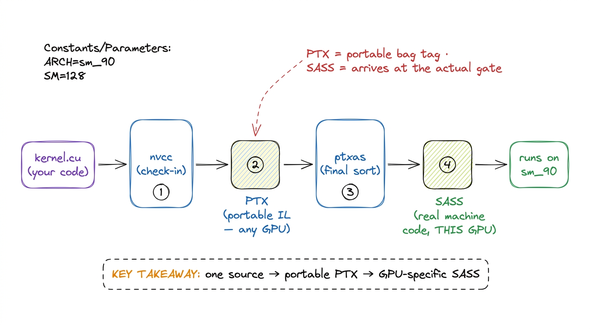
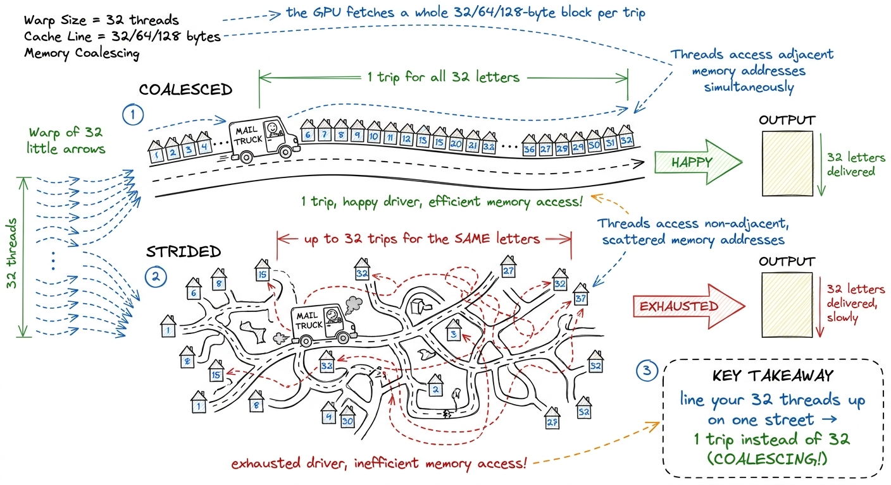
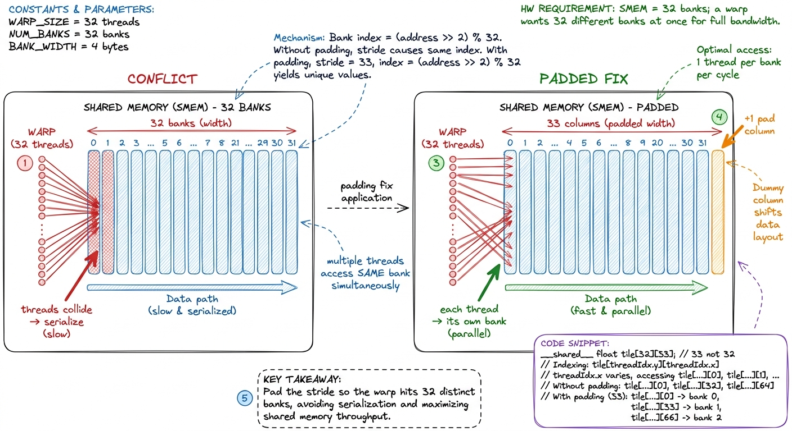
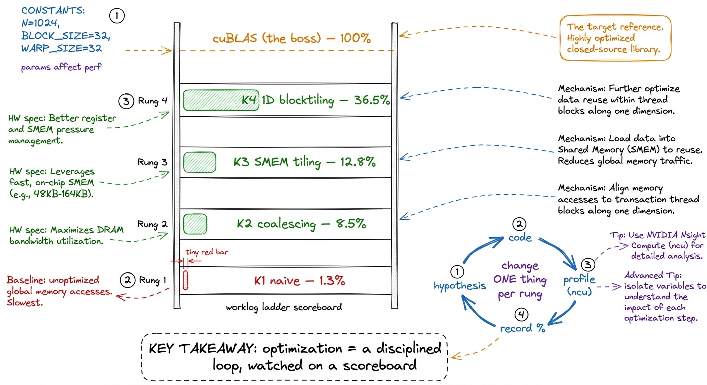
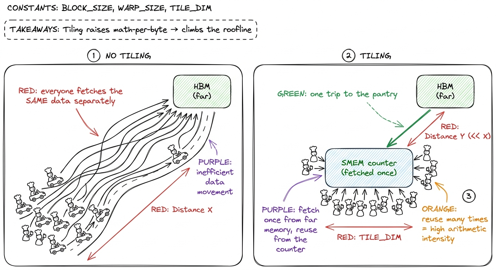

Lecture plans: L1–L4, minute by minute
By the end of this chapter you can walk into the room for any of the first four lectures with a wristwatch, a marker, and a plan — knowing exactly what to draw, when to draw it, which single demo to run, and how to check the room is still with you before you move on. This is the delivery playbook. The concepts live in the other chapters; here we choreograph them into three-hour lectures that never sag.
Each lecture is three fifty-minute blocks with two short breaks. Your job is to protect the rhythm: one big idea per block, one live thing per block, one checkpoint question before the break. If a block runs long, cut content, never the demo.

figure rendering · The universal shape of every lecture: three courses, cleared between wBelow, each lecture gets a minute-by-minute spine, the board sequence, the one demo, and the checkpoint questions. Keep this page open on your laptop while you teach.
L1 — "How fast can this go?" (mental models + the silicon)
The whole lecture answers one question, and you should write it on the board and leave it there for three hours: "What percentage of peak are you at?" Everything L1 teaches is machinery for answering that.
Block 1 (0:00–0:50) — The three regimes + the roofline
- 0:00–0:08. Cold open. Ask: "If I gave you the best GPU on Earth, how fast could this run?" Let them flounder — most say "as fast as the GPU's FLOPs." Plant the seed that the answer is usually no.
- 0:08–0:25. The three regimes. Draw three buckets: compute-bound (waiting on math), memory-bound (waiting on data), overhead-bound (waiting on the launch/Python). One everyday example each. Every kernel lives in one bucket.
- 0:25–0:45. Napkin math on the H100, live and slow. Two headline numbers: 989 TF/s BF16 compute vs 3.35 TB/s HBM bandwidth. Divide them. That ratio — about 295 — is the arithmetic-intensity break-even: you need ~295 math ops per byte fetched, or the memory pipe starves the math units.
- 0:45–0:50. Draw the roofline live: a flat ceiling (compute limit) and a slanted ramp (memory limit) meeting at ~295. Where your kernel sits under that roof is its regime.

figure rendering · The roofline drawn live: the ridge at ~295 splits every kernel into me- Checkpoint (before break): "I give you a kernel that reads a huge array and adds 1 to each element. Compute-bound or memory-bound?" (Answer: memory-bound — one add per byte, far left of the ridge.)
Block 2 (1:00–1:50) — Silicon tour, top-down
- 1:00–1:10. Set the rule: go top-down, big to small. Students drown if you start with transistors.
- 1:10–1:40. Peel the onion, one layer per few minutes: the die → 8 GPCs → SMs (the H100 has 132) → inside one SM: warp schedulers, tensor cores, register file, shared SMEM/L1. Then zoom back out to the plumbing: L2 + crossbar, and the HBM stacks on the interposer.
- 1:40–1:50. The punchline: almost all that silicon is arithmetic, and memory sits far away. This is why the roofline ridge exists — physical distance.

figure rendering · The silicon as a top-down zoom: die to GPC to SM to plumbing, ending o- Checkpoint (before break): "How many SMs does an H100 have, and what lives inside one?" (132; warp schedulers, tensor cores, register file, SMEM/L1.)
Block 3 (2:00–2:50) — LIVE: predict-then-measure in PyTorch
This is the block they came for. The one demo: benchmark three operations and place each on the roofline before measuring.
- 2:00–2:10. The game: "We predict the regime, then measure. Predicting first is the whole skill."
- 2:10–2:40. Benchmark ReLU, softmax, and GEMM at several sizes. For each: compute FLOPs and bytes on the board, place a dot on the roofline, then run the timing and read the achieved TF/s. Watch ReLU stick on the memory ramp while big GEMM climbs to the compute roof.
- 2:40–2:50. Debrief with the master question, per op: "What % of peak were you at?"
torch.relu, torch.softmax, and torch.matmul (via torch.cuda.Event) and prints achieved TFLOP/s next to the H100's 989 peak. Predict the regime first, THEN run. The jaw-drop: ReLU on a big tensor hits maybe 2–3% of peak FLOPs and is totally fine there — it's memory-bound, already near the memory roof. "Low FLOP % isn't failure; being far from the right roof is."L2 — The CUDA programming model + first kernels
L2 is where they write GPU code for the first time. The emotional goal: demystify the launch. By the end they should feel that a kernel is just "the same function, run by thousands of threads at once, each told who it is."
Block 1 (0:00–0:50) — Grid / block / warp / thread
- 0:00–0:20. Build the hierarchy bottom-up here (deliberately opposite of L1's top-down silicon tour; software builds up, hardware zooms down). Thread = one worker. Warp = 32 threads in lockstep. Block = warps sharing SMEM. Grid = all the blocks in one launch.
- 0:20–0:35. The key move: every thread runs the same code but computes its own index from
blockIdx,blockDim,threadIdx. That index is "who am I" — how one function fans out over a million elements. - 0:35–0:50. SIMT and divergence. The 32 threads in a warp share one instruction pointer. Hit an
ifthat splits them and the warp runs both sides with half asleep each time. That's divergence — a tax.

figure rendering · The thread hierarchy as a stadium card-stunt: one instruction sheet, e- Checkpoint (before break): "A warp hits
if (threadIdx.x < 16). What does the hardware do?" (Runs both branches serially, masking off the inactive half — divergence.)
Block 2 (1:00–1:50) — Launch anatomy + the compile story
- 1:00–1:25. Anatomy of a kernel launch: the
<<<grid, block>>>syntax, what a__global__function is, how the index math turns into work. Write a fullvector_addkernel on the board, line by line. - 1:25–1:50. The compilation story, drawn as a pipeline: nvcc → PTX → ptxas → SASS. PTX is the portable "assembly-ish" intermediate; SASS is the real machine code for this GPU. Introduce compute capability (the "sm_90" tag) as "which GPU dialect."
.cu is the suitcase, nvcc is check-in, PTX is the tagged bag on the belt (portable, any airport), ptxas is the final sort at this airport, SASS is the bag at the actual gate for this GPU. Students conflate PTX and SASS constantly; "portable tag vs final gate" fixes it. You'll thank yourself in L5 reading SASS live.
figure rendering · The compile pipeline as an airport belt: source to portable PTX to GPU- Checkpoint (before break): "What's the difference between PTX and SASS?" (PTX = portable intermediate; SASS = final machine code for a specific GPU.)
Block 3 (2:00–2:50) — LIVE: three kernels + first GPU-Puzzles
The one demo: write and run three real kernels in ascending difficulty, live.
- 2:00–2:15. Vector add — the hello-world. Launch, verify, celebrate. Their first GPU code runs.
- 2:15–2:30. RGB → grayscale — same pattern on a real image, so the output is visible. Show the picture turn grey; visible output is a morale win.
- 2:30–2:45. Naive reduction (sum an array) — the first kernel where threads must cooperate, setting up the memory lecture.
- 2:45–2:50. Solve the first GPU-Puzzles together as a cool-down.
grey = 0.21R + 0.72G + 0.07B. When the image goes grey in front of them, that's the "I made the GPU do something" moment they'll tell people about.- Checkpoint (before break): "In
vector_add, how does thread number 5000 know which array element it owns?" (From its global index:blockIdx.x * blockDim.x + threadIdx.x.)
L3 — The memory hierarchy in anger
L3 is the turning point. L1 said "feeding the cooks is the whole game"; L3 is where they feel it live, with a profiler. Emotional goal: the same math can be 10× faster purely by moving data smarter.
Block 1 (0:00–0:50) — Coalescing
- 0:00–0:20. The idea: the GPU fetches memory in fixed chunks — 32/64/128-byte transactions. If a warp's 32 threads read 32 neighboring addresses, that's one tidy transaction. If they read 32 scattered addresses, that's up to 32 separate transactions — same data, many times the traffic.
- 0:20–0:40. Draw coalesced vs strided access with a warp of 32 arrows.
- 0:40–0:50. The payoff: coalescing is often the single biggest free speedup in a naive kernel.

figure rendering · Coalescing as a mail carrier: neighboring addresses = one trip; scatte- Checkpoint (before break): "Thread
treadsA[t]vsA[t * 1000]. Which coalesces?" (A[t]— neighbors; the strided one scatters.)
Block 2 (1:00–1:50) — Shared memory, bank conflicts, occupancy
- 1:00–1:20. SMEM as the on-chip scratchpad: a small, fast, shared space a block uses to avoid re-fetching from far-away HBM. "Keep the ingredients on the counter, not in the far pantry."
- 1:20–1:35. Bank conflicts. SMEM is 32 banks; two threads in a warp hitting the same bank serialize. Show the classic case and the padding fix (one dummy column so the stride dodges the banks).
- 1:35–1:50. Occupancy calculus. Blocks-per-SM depends on registers-per-thread and SMEM-per-block. More resident warps = more latency hiding — but push registers too high and you spill to slow local memory.

figure rendering · Bank conflicts and the one-column padding fix: spread the warp across- Checkpoint (before break): "Why does adding one unused column to a shared tile speed things up?" (It shifts the access stride so warp lanes hit distinct banks — kills the conflict.)
Block 3 (2:00–2:50) — LIVE: the transpose ladder + first Nsight Compute
The one demo: the matrix-transpose ladder, climbing rung by rung, profiled live. This is a dress rehearsal for the GEMM worklog in L4.
- 2:00–2:12. Naive transpose. Run it, time it. Slow — the writes are strided (uncoalesced).
- 2:12–2:24. Coalesced transpose via SMEM: read coalesced, transpose in the scratchpad, write coalesced. Time it — big jump.
- 2:24–2:36. + padding to kill the bank conflict the SMEM version introduced. Time again — another jump.
- 2:36–2:50. First contact with
ncu(Nsight Compute). Open the memory section; show achieved bandwidth and the "uncoalesced access" warning appearing and vanishing as you climb.
- Checkpoint (before break): "The naive and coalesced transpose do the exact same multiplies. Why is one 10× faster?" (Memory access pattern — coalesced writes vs strided writes.)
L4 — GEMM worklog I: naive → tiling (the ladder begins)
L4 is the heart of the course made visible: a worklog ladder where each rung is hypothesis → code → profile → new % of cuBLAS. The emotional goal: optimization is a disciplined loop, not magic. They watch a number climb and learn the method that made it climb.
Block 1 (0:00–0:50) — The ratchet + Kernel 1 (naive)
- 0:00–0:15. Frame the worklog. Write the ladder as empty rungs with a "% of cuBLAS" column. The loop: guess the bottleneck (hypothesis), change one thing (code), measure with ncu (profile), record the %. Repeat. cuBLAS (NVIDIA's own library) is 100% — the boss we're chasing.
- 0:15–0:35. Kernel 1: naive. One thread per output cell, each doing a full dot product straight from HBM — the three-nested-loop matmul they already know, one thread per (i, j). Write it.
- 0:35–0:50. Profile: ~1.3% of cuBLAS. Diagnose — every thread re-reads whole rows/columns from far-away HBM. Memory-bound, terribly fed.

figure rendering · The GEMM ladder as a scoreboard: each rung is one hypothesis-code-prof- Checkpoint (before break): "Kernel 1 does the right math and gets 1.3% of cuBLAS. What's the bottleneck?" (Memory — every thread re-fetches its whole row/column from HBM.)
Block 2 (1:00–1:50) — K2 coalescing + K3 SMEM tiling
- 1:00–1:20. Kernel 2: coalescing. Reassign which thread handles which cell so neighboring threads read neighboring memory (straight from L3). One indexing change. Profile: 8.5% — a ~6× jump from nothing but access pattern.
- 1:20–1:50. Kernel 3: SMEM tiling. The big conceptual rung. Instead of each thread hitting HBM for the full dot product, the block cooperatively loads a tile of A and a tile of B into SMEM once, and every thread reuses them. The arithmetic-intensity ratchet in action — more math per byte. Profile: 12.8%.

figure rendering · SMEM tiling as a potluck: load the shared counter once, reuse it many- Checkpoint (before break): "K2 to K3 barely changed the FLOPs. Why did it get faster?" (SMEM tiling reuses each fetched byte many times — higher arithmetic intensity, fewer HBM trips.)
Block 3 (2:00–2:50) — LIVE: K4 1D blocktiling + climb the ladder
The one demo: build Kernel 4 (1D blocktiling) live and profile every rung, watching the % of cuBLAS climb in real time.
- 2:00–2:20. Blocktiling: give each thread more than one output element, amortizing its loads across several results. More work per byte still — the ratchet turns again.
- 2:20–2:40. Build it, run it, profile with ncu. Record: 36.5% of cuBLAS. From 1.3% to 36.5% in one lecture.
- 2:40–2:50. Debrief the ladder. Point at the scoreboard: every jump came from feeding the cooks better, never from changing the multiply. Preview L5: registers and warptiling reach 93%+.
matmul on a server. Getting to 90%+ of it by hand isn't academic — the H100 kernels behind vLLM, FlashAttention, and DeepSeek's serving stack are exactly this game played to the last percent. The loop you learned today — hypothesize, change one thing, profile, record — is the job."- Checkpoint (before break): "We went 1.3% → 36.5% without changing the math. In one word, what did we optimize?" (Memory — data movement / feeding.)
Teaching notes that apply to all four lectures
You can now teach
- L1 minute by minute: the three regimes, the H100 napkin math (989 TF/s vs 3.35 TB/s → ~295), the roofline drawn live, and the predict-then-measure PyTorch demo.
- L2 minute by minute: the grid/block/warp/thread hierarchy as a card-stunt, launch and compile anatomy (nvcc→PTX→ptxas→SASS), and the vector-add / RGB→grey / reduction demo.
- L3 minute by minute: coalescing as a mail carrier, SMEM + bank conflicts + the padding fix, occupancy, and the live transpose ladder profiled in ncu.
- L4 minute by minute: the worklog loop (hypothesis→code→profile→%), the naive→coalesced→SMEM→blocktiling ladder from 1.3% to 36.5% of cuBLAS, built and profiled live.
- The universal lecture shape: three courses, one big idea and one live demo per block, a checkpoint question before each break — and the discipline to protect the demo when time runs short.
- The through-line to repeat in every lecture: the math is fixed; you win by feeding the cooks — kernel engineering is 90% logistics.